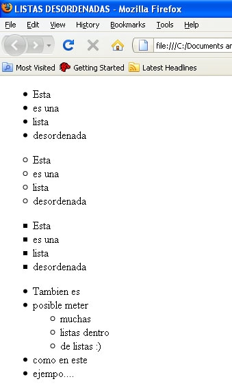

Listas
Las Listas en HTML 5, permite crear un conjunto de elementos en forma de lista dentro de una página,
A continuación, mencionare diferentes tipos de listas que se pueden desarrollar en HTML.
Listas Ordenadas (ol): En HTML 5, una lista ordenada mostrara los elementos de manera ordenada,
enlazando los elementos con numero o letras que permitirán establecer su orden.
Listas Desordenadas (ul): En HTML 5, una lista desordenada mostrara los elementos sin ningún orden,
pero marcara con viñetas los elementos, ya sean puntos o cuadros.
Listas de Definiciones (dl): En HTML 5, una lista de definición funciona con el objetivo de montar
elementos con definición o valor, un ejemplo sería un patrón de diccionario.
Listas en HTML 5. (s. f.). Manual Web. http://www.manualweb.net/html/listas-html/

Enlaces
Los Enlaces son importantes, en el desarrollo de páginas web estos permiten enlazar o comunicar
otras páginas, imágenes o documentos HTML con la pagina existente.
Se puede enlazar dominios o recursos de red destinados a propósitos mas técnicos, o incluso enlazar
el alcance o descarga de ficheros.
Enlaces. (s. f.). Manual Web. http://www.manualweb.net/html/enlaces-html/